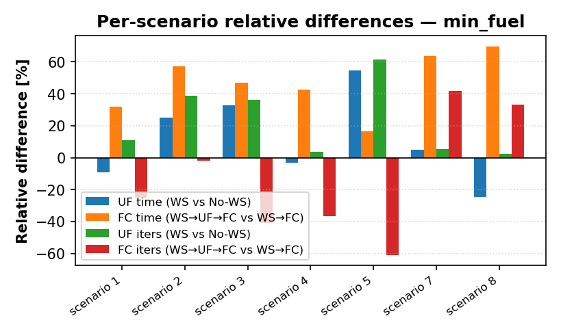
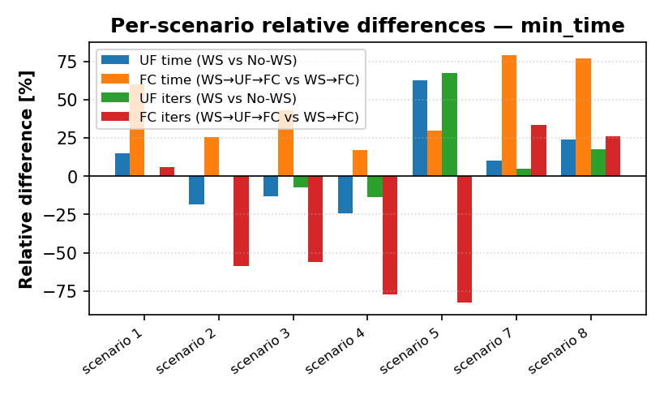
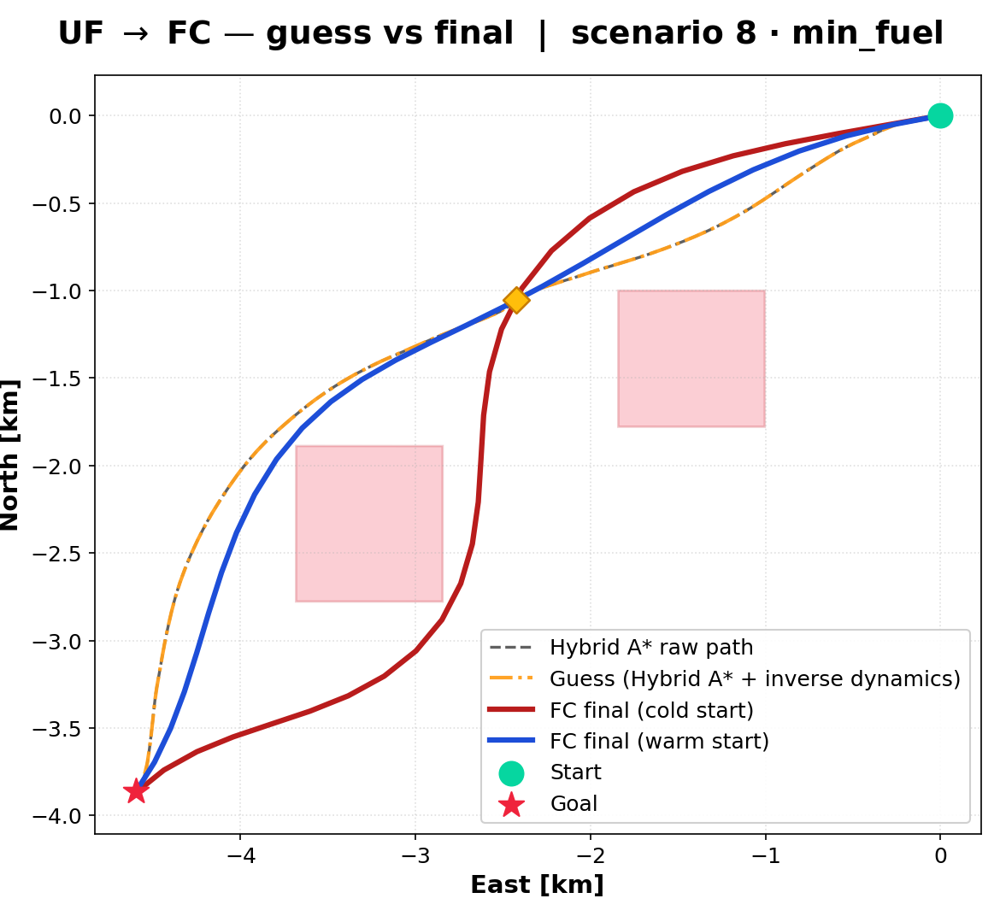
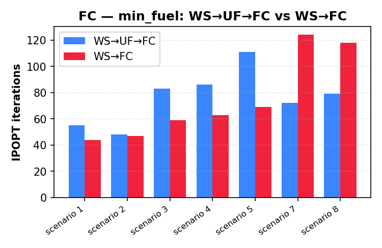

14. Warm-start benchmark
TL;DR
Cold start fails the point-mass solver in every NFZ/waypoint-only scenario. The full pipeline converges 8/8, and the 6-DoF stage runs 1.2–4.4× faster than a direct seed, with the largest gain in the hardest scenario. The 6-DoF stage still misses the 4 s real-time target.
Setup
Eight scenarios × two objectives (min-fuel, min-time), two repetitions (times are means; iterations come from the fastest repetition).
| Scenario | Family |
|---|---|
| 1–4 | empty airspace |
| 5–6 | NFZ only |
| 7 | waypoints only |
| 8 | NFZ + waypoints |
Two independent comparisons:
- UF — value of the warm start. Hybrid A* + inverse dynamics (WS) against a linear-interpolation guess (No-WS).
- FC — value of the intermediate UF stage.
WS→UF→FC(full chain) againstWS→FC(seed FC directly from inverse dynamics).
A run counts as feasible only if the final stage returns Solve_Succeeded / Solved_To_Acceptable_Level, produces a trajectory, and stays within the wall-clock budget (40 s).
UF: robustness, not always speed
| min-fuel | min-time | |
|---|---|---|
| No-WS UF converges | 5/8 | 5/8 |
| WS UF converges | 8/8 | 8/8 |
| Failing No-WS cases | scenarios 5, 6, 7 (restoration failed / infeasible) | same |
| WS faster than No-WS (converged pairs) | 3/5 | 1/5 |
WS UF times are 0.5–3.0 s, within the 4 s target. In easy empty-airspace cases the warm start can be slightly slower in total, because the Hybrid A* and inverse-dynamics time (40–220 ms and 2–25 ms) is added; the benefit shows where the cold start struggles: it fails outright in scenarios 5–7.
FC: the intermediate UF stage pays off
| Scenario | min-fuel WS→FC |
min-fuel WS→UF→FC |
min-time WS→FC |
min-time WS→UF→FC |
|---|---|---|---|---|
| 1 | 11.2 s | 6.7 s | 12.1 s | 4.5 s |
| 2 | 12.1 s | 5.2 s | 8.2 s | 5.2 s |
| 3 | 21.3 s | 11.3 s | 12.9 s | 8.5 s |
| 4 | 17.1 s | 12.2 s | 14.0 s | 10.3 s |
| 5 | 20.6 s | 12.8 s | 12.4 s | 10.5 s |
| 6 | 21.0 s | 9.4 s | 22.7 s | 12.9 s |
| 7 | timeout (>60 s) | 11.9 s | timeout (>60 s) | 11.6 s |
| 8 | 48.8 s | 11.1 s | 41.4 s | 10.8 s |
- Faster in 7/7 scenarios where both converge; mean saving 11.9 s (min-fuel) and 8.7 s (min-time).
- Scenario 8 (NFZ + waypoints): 4.4× (min-fuel) and 3.8× (min-time); 111–118 iterations for the direct seed against 79–82 with the full chain.
- Scenario 7: only the full chain converges.
- The two pipelines end at nearly the same solution: trajectory deviation 3.3–4.5 %, end mass differences ≤ 0.1 kg.




Limitations visible in the data
- FC does not meet 4 s. Total FC pipeline time with warm start is 4.5–12.9 s on this hardware; only UF (0.5–3.0 s) meets the target.
- The full chain does not always use fewer iterations: in some scenarios
WS→FCneeds fewer IPOPT iterations but each is far more expensive, so wall-clock still favours the full chain. - Without warm start, scenario 5–7 UF trajectories also deviate 50–100 % from the warm-start ones, i.e. the cold solver was not finding the same optimum.
- Only 8 scenarios, 2 repetitions each, one machine. These results show the mechanism, not a statistical guarantee.
Raw aggregated table: results/benchmark_summary.csv.